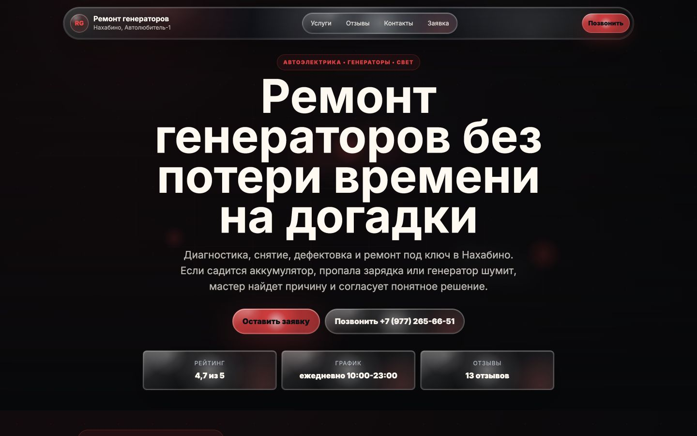

Сайты и лендинги для автобизнеса
Сайт для автосервиса, который доводит клиента до записи
Делаем лендинги и многостраничные сайты для автосервисов, шиномонтажей и автомастерских: структура, доверие, заявки в Telegram и понятный путь от интереса до записи.
Первый показ без предоплаты: сначала смотрите, как сайт может работать именно для вашего сервиса, потом решаете по запуску.
Примеры работ
12 лендингов автосервисов, которые уже можно открыть
Зачем отдельный сайт
Хороший сайт снимает часть вопросов до звонка
Он работает как промежуточный слой между картами, рекламой, рекомендацией знакомого и администратором. Клиент приходит уже с пониманием услуги и следующего шага.
Клиент понимает услуги
Не ищет по чатам и не спрашивает базовое — видит направления, условия, ориентиры по цене и следующий шаг.
Клиент заранее передает данные
Марка авто, проблема, нужная услуга, удобное время и комментарий приходят в Telegram.
Сервис показывает доверие
Фото работ, опыт мастеров, гарантии, отзывы и процесс ремонта объясняют больше, чем фраза «работаем качественно».
Владелец видит, что происходит
UTM-метки, источники и структура заявок помогают понимать, откуда приходят обращения.
Для разных задач
Не всем автосервисам нужен «просто поток заявок»
Лендинг должен учитывать загрузку, маржинальные услуги, сезонность и то, какие обращения действительно полезны владельцу.
Загруженный сервис
Не добавлять хаос, а подготовить клиента до контакта.
- меньше повторных объяснений по телефону;
- меньше неполных обращений;
- заявки сразу с нужными данными;
- понятная запись на диагностику или ремонт.
Недогруженный сервис
Занять локальный спрос по нужным услугам.
- страницы под приоритетные услуги;
- понятное отличие от сервисов рядом;
- доверие через фото, отзывы, гарантии;
- связка с картами, рекламой и аналитикой.
Гибридный случай
Заявки есть, но нужны более прибыльные.
- фокус на выгодные направления;
- фильтрация неподходящих запросов;
- блоки под марки, услуги и сезонность;
- заявки с квалификацией клиента.
Что должен закрывать сайт
Владелец машины боится не сайта. Он боится переплаты, плохого ремонта и неизвестности
Сколько это будет стоить?
Показываем диапазоны, факторы цены и объясняем, когда нужен осмотр.
Можно ли доверять мастерам?
Показываем реальные работы, специализацию, опыт, оборудование и отзывы.
Сколько займет ремонт?
Объясняем этапы: диагностика, согласование, запчасти, ремонт, проверка.
Мне навяжут лишнее?
Добавляем блок про согласование работ, прозрачность и фотофиксацию.
Как записаться без лишних разговоров?
Даем простую форму, звонок, мессенджер и понятное подтверждение заявки.
Состав сайта
Собираем не «красивую страницу», а путь от интереса до заявки
Первый экран с сильным оффером
Блок услуг и приоритетных направлений
Цены, ориентиры и факторы расчета
Фото работ и галерея
Отзывы и доказательства
Гарантии и процесс ремонта
Частые вопросы
Контакты, карта, режим работы
Форма заявки с квалификацией
PHP-обработчик заявок
Отправка в Telegram
Базовая аналитика и UTM-метки
Как приходит заявка
Администратор получает не пустой звонок, а подготовленную заявку
Такая заявка помогает быстро понять, кто обратился, какая задача у бизнеса и какой следующий шаг предложить. Форма не просит клиента писать сочинение, но собирает то, что обычно приходится выяснять по телефону.
Получить такую формуДемо до покупки
Сначала покажем демо. Потом вы решите, нужно ли запускать сайт
Мы не просим покупать абстрактный сайт по обещаниям. Сначала показываем, как может выглядеть конкретная страница под ваш сервис.
Получить демо для моего автосервиса- Вы оставляете заявку
- Мы смотрим ваш сервис, услуги, карточки, отзывы и текущее присутствие
- Собираем первый вариант структуры и визуала
- Показываем демо-страницу
- Если видите ценность — дорабатываем и запускаем
Процесс работы
От диагностики до рабочей формы заявки
Диагностика
Понимаем загрузку, приоритетные услуги, географию, страхи клиентов и текущие источники обращений.
Смысловая структура
Собираем блоки не по шаблону, а по вопросам владельца машины и задачам сервиса.
Дизайн и адаптация
Делаем современный интерфейс, который хорошо читается на телефоне и не выглядит как шаблон.
PHP-бэкэнд и Telegram
Подключаем обработчик заявок, защиту от спама и отправку обращений в Telegram.
Проверка и запуск
Проверяем формы, мобильную версию, скорость, ошибки и передачу данных.
Чем отличается подход
Обычный сайт показывает компанию. Наш лендинг помогает клиенту дойти до записи
-
01
Обычно «Сделаем красиво»У нас Сначала задача автосервиса
-
02
Обычно Много общих фразУ нас Структура под страхи клиента
-
03
Обычно Форма: имя + телефонУ нас Форма с полезными данными
-
04
Обычно Услуги списком без приоритетаУ нас Услуги выстроены по приоритету бизнеса
-
05
Обычно Нет логики обработки заявкиУ нас Заявки уходят в Telegram
-
06
Обычно Нет объяснения цены, сроков и гарантийУ нас Есть объяснение следующего шага
Варианты запуска
Можно начать с демо и доработать до запуска
Стоимость зависит от объема, количества блоков, материалов, интеграций и скорости запуска.
Демо-лендинг
Понять, как может выглядеть сайт вашего автосервиса.
- первый экран;
- структура блоков;
- пример формы;
- визуальная подача;
- базовая адаптация.
Рабочий лендинг
Запустить страницу и принимать заявки.
- полный лендинг;
- адаптив;
- формы;
- PHP-бэкэнд;
- Telegram-бот;
- базовая аналитика;
- техническая проверка.
Сайт под рост
Продвигать отдельные услуги, марки, сезонные направления.
- основной лендинг;
- секции или страницы под услуги;
- усиление доверия;
- UTM и аналитика;
- доработки после первых данных.
FAQ
Что важно понять до заявки
Коротко отвечаем на вопросы, которые обычно появляются перед первым демо.
Вы гарантируете заявки?
Нет. На заявки влияют трафик, репутация, география, цены, обработка обращений и сезонность. Мы отвечаем за структуру сайта, форму, передачу заявок и понятный путь клиента до обращения.
Зачем сайт, если есть Яндекс.Карты?
Карты помогают найти сервис, но часто не объясняют услуги, цены, гарантии, процесс и следующий шаг. Сайт может стать местом, где клиент получает полную картину и оставляет подготовленную заявку.
Что значит демо до покупки?
Мы показываем первый вариант страницы под ваш автосервис, чтобы вы оценили подход до полноценного запуска.
Можно ли отправлять заявки в Telegram?
Да. Форма на сайте отправляет данные в Telegram через бота. Токен хранится на сервере, не во frontend.
Можно ли сделать сайт быстро?
Первую демо-версию можно подготовить быстро, если есть исходные данные. Полный запуск зависит от объема, правок, материалов и интеграций.
Что нужно от нас?
Название сервиса, город, услуги, приоритетные направления, фото, отзывы, режим работы, контакты и понимание, какие заявки нужны больше всего.
Можно ли сделать не только лендинг?
Да, но первый шаг — сфокусированная посадочная страница. Если нужны разделы под марки, услуги или географию, это можно расширить после базовой структуры.
Получить демо-сайт
Покажем, каким может быть сайт вашего автосервиса
Оставьте имя и телефон — мы свяжемся, уточним задачу и покажем, как может выглядеть первый экран, структура и заявка для вашего сервиса.
Без длинной анкеты
Первый разбор до покупки
Заявка уйдет нам в Telegram